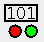

The dynamic components provides the means of observing/manipulating components that are hidden in a sub-circuit on a higher level. Example: You have placed a led in a circuit named MyNiceCircuit. Now you use MyNiceCircuit as sub-circuit in the circuit named MyToplevel. Simulating in MyToplevel will hide your led, hence you have no means to see if the led in MyNiceCircuit is lighting up or not. The dynamic components help here by providing the possibility of putting an image of the led on the sub-circuit symbol of MyNiceCircuit. To add dynamic components to the sub-circuit symbol of MyNiceCircuit, you have first to open the appearance editor of the circuit MyNiceCircuit. Than you click on the -tool icon. A window will open listing all the available dynamic components, and you can select which one to show in the appearance of your sub-circuit symbol. Note that the dynamic components feature is a recursive property. This means that if you have a hierarchical structure, it will show all possible dynamic components available down from the current sub-circuit.
Currently following tools support dynamic components:
| LED-tool | |
| RGB-LED-tool | |
| to be completed |